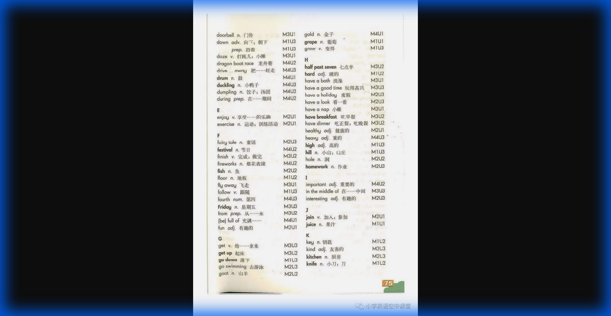
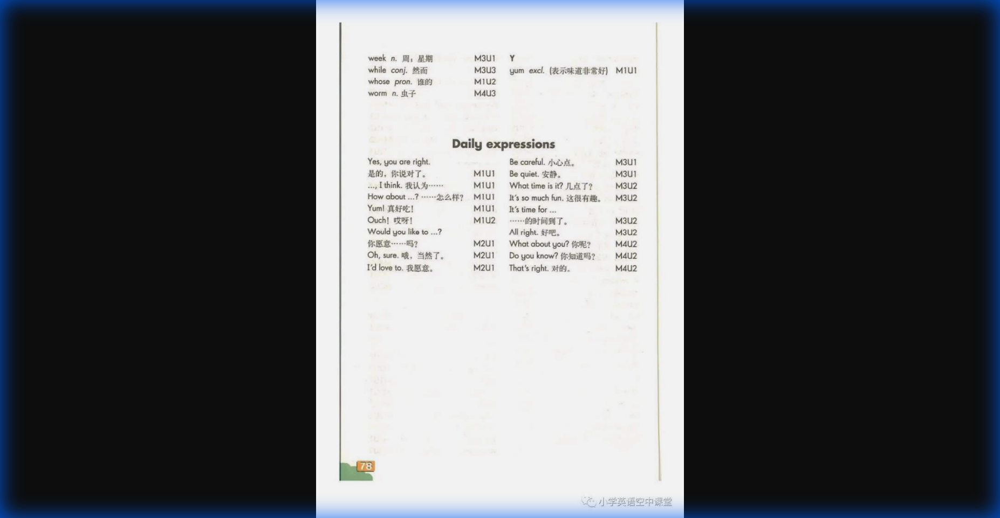

📚 沪教版四年级英语下册 单词表
| 单词 Word | 词性 POS | 音标 Phonetic | 中文意思 Meaning |
|---|---|---|---|
| A | |||
| a glass of | - | /ə glɑːs ɒv/ | 一杯 |
| a little | - | /ə ˈlɪtl/ | 一点儿 |
| a quarter past seven | - | /ə ˈkwɔːtə pɑːst ˈsevən/ | 七点十五分 |
| a quarter to eight | - | /ə ˈkwɔːtə tə eɪt/ | 七点四十五分 |
| about | prep. | /əˈbaʊt/ | 关于 |
| activity | n. | /ækˈtɪvəti/ | 活动 |
| again | adv. | /əˈɡen/ | 又，再 |
| all year | - | /ɔːl jɪə/ | 全年，全年 |
| also | adv. | /ˈɔːlsəʊ/ | 也 |
| always | adv. | /ˈɔːlweɪz/ | 总是 |
| angry | adj. | /ˈæŋɡri/ | 生气的 |
| another | pron. | /əˈnʌðər/ | 另一个 |
| ask | v. | /ɑːsk/ | 问 |
| at noon | - | /æt nuːn/ | 在中午 |
| at weekends | - | /æt ˌwiːkˈendz/ | 在周末 |
| awake | adj. | /əˈweɪk/ | 醒着的 |
| away | adv. | /əˈweɪ/ | 离开 |
| B | |||
| back | adv. | /bæk/ | 回 |
| basket | n. | /ˈbɑːskɪt/ | 篮子，筐 |
| bathroom | n. | /ˈbɑːθruːm/ | 浴室浴室 |
| battery | n. | /ˈbætəri/ | 电池 |
| bedroom | n. | /ˈbedruːm/ | 卧室 |
| bedtime | n. | /ˈbedtaɪm/ | 就寝时间 |
| before | prep. | /bɪˈfɔːr/ | 在...之前 |
| bell | n. | /bel/ | 铃，钟 |
| blanket | n. | /ˈblæŋkɪt/ | 毯子 |
| blind | adj. | /blaɪnd/ | 瞎的 |
| bone | n. | /bəʊn/ | 骨头 |
| bored | adj. | /bɔːrd/ | 无聊的 |
| bowl | n. | /bəʊl/ | 碗 |
| brush my teeth | - | /brʌʃ maɪ tiːθ/ | 刷牙 |
| C | |||
| careful | adj. | /ˈkeəfəl/ | 小心的 |
| cartoon | n. | /kɑːˈtuːn/ | 卡通 |
| cat food | n. | /kæt fuːd/ | 猫粮 |
| catch | v. | /kætʃ/ | 抓住，接住 |
| cherry | n. | /ˈtʃeri/ | 樱桃 |
| Chinese chess | n. | /ˌtʃaɪˈniːz tʃes/ | 中国象棋 |
| clever | adj. | /ˈklevər/ | 聪明的 |
| club | n. | /klʌb/ | 俱乐部 |
| cook | v. | /kʊk/ | 烹饪 |
| cry | n./v. | /kraɪ/ | 哭 |
| cute | adj. | /kjuːt/ | 可爱的 |
| D | |||
| dinner | n. | /ˈdɪnər/ | （中午或晚上吃的）正餐 |
| dog food | n. | /dɒg fuːd/ | 狗粮 |
| doorbell | n. | /ˈdɔːrbel/ | 门铃 |
| down | adv. | /daʊn/ | 向下，向下 |
| draw | v. | /drɔː/ | 画画 |
| dragon boat race | n. | /ˌdrægən bəʊt reɪs/ | 龙舟赛 |
| drive | v. | /draɪv/ | 驾驶 |
| duckling | n. | /ˈdʌklɪŋ/ | 小鸭 |
| dumpling | n. | /ˈdʌmplɪŋ/ | 饺子，汤圆 |
| during | prep. | /ˈdjʊərɪŋ/ | 在...期间 |
| E | |||
| enjoy | v. | /ɪnˈdʒɔɪ/ | 享受，喜爱 |
| exercise | n. | /ˈeksəsaɪz/ | 运动，锻炼活动 |
| F | |||
| fairy tale | n. | /ˌfeəri teɪl/ | 童话 |
| fastfood | n. | /faːst fuːd/ | 快餐 |
| finish | v. | /ˈfɪnɪʃ/ | 完成，结束 |
| fireworks | n. | /ˈfaɪərwɜːks/ | 烟火，烟花 |
| fish | n. | /fɪʃ/ | 鱼 |
| floor | n. | /flɔːr/ | 地板 |
| fly | v. | /flaɪ/ | 飞 |
| follow | v. | /ˈfɒləʊ/ | 跟随 |
| free | adj. | /friː/ | 空闲的 |
| Friday | n. | /ˈfraɪdeɪ/ | 星期五 |
| friend | n. | /frend/ | 朋友 |
| full (full of) | adj. | /fʊl/ | 充满...的 |
| fun | adj. | /fʌn/ | 有趣的 |
| G | |||
| get | v. | /ɡet/ | 获得，拿来 |
| get up | - | /get ʌp/ | 起床 |
| go down | - | /gəʊ daʊn/ | 下去 |
| gold | n. | /ɡəʊld/ | 金子 |
| grape | n. | /ɡreɪp/ | 葡萄 |
| grow | v. | /ɡrəʊ/ | 生长 |
| H | |||
| half past seven | - | /hɑːf pɑːst ˈsevən/ | 七点半 |
| hard | adj. | /hɑːrd/ | 硬的 |
| have a cold | - | /hæv ə kəʊld/ | 感冒 |
| have a good time | - | /hæv ə gʊd taɪm/ | 玩得开心 |
| have a holiday | - | /hæv ə ˈhɒlədeɪ/ | 度假 |
| have a look | - | /hæv ə lʊk/ | 看一看 |
| have a rest | - | /hæv ə rest/ | 休息 |
| have breakfast | - | /hæv ˈbrekfəst/ | 吃早饭 |
| have dinner | - | /hæv ˈdɪnə/ | 吃正餐，吃晚饭 |
| healthy | adj. | /ˈhelθi/ | 健康的 |
| heavy | adj. | /ˈhevi/ | 沉重的 |
| high | adj. | /haɪ/ | 高的 |
| hill | n. | /hɪl/ | 小山，山丘 |
| homework | n. | /ˈhəʊmwɜːrk/ | 作业 |
| I | |||
| important | adj. | /ɪmˈpɔːrtənt/ | 重要的 |
| in the middle of | - | /ɪn ðə ˈmɪdl ɒv/ | 在...中间 |
| interesting | adj. | /ˈɪntrəstɪŋ/ | 有趣的 |
| J | |||
| join | v. | /dʒɔɪn/ | 加入，参加 |
| joy | n. | /dʒɔɪ/ | 欢乐 |
| K | |||
| kitchen | n. | /ˈkɪtʃɪn/ | 厨房 |
| L | |||
| large | adj. | /lɑːrdʒ/ | 大的 |
| last night | - | /lɑːst naɪt/ | 昨天晚上 |
| late | adj. | /leɪt/ | 迟到的 |
| like | prep. | /laɪk/ | 像 |
| lion | n. | /ˈlaɪən/ | 狮子 |
| living room | n. | /ˌlɪvɪŋ ruːm/ | 客厅 |
| lovely | adj. | /ˈlʌvli/ | 美丽的 |
| loud | adj. | /laʊd/ | 大声的，响亮的 |
| M | |||
| make | v. | /meɪk/ | 制作 |
| meeting | n. | /ˈmiːtɪŋ/ | 会议 |
| model plane | n. | /ˌmɒdl pleɪn/ | 飞机模型 |
| Monday | n. | /ˈmʌndeɪ/ | 星期一 |
| money | n. | /ˈmʌni/ | 钱 |
| mouse | n. | /maʊs/ | 老鼠 |
| N | |||
| need | v. | /niːd/ | 需要 |
| never | adv. | /ˈnevər/ | 从不 |
| New Year's Eve | n. | /njuː jɪəz iːv/ | 除夕 |
| noisy | adj. | /ˈnɔɪzi/ | 吵闹的 |
| noodles | n. | /ˈnuːdlz/ | 面条 |
| notice | n. | /ˈnəʊtɪs/ | 通知 |
| O | |||
| often | adv. | /ˈɒfn/ | 经常 |
| once upon a time | - | /wʌns əˈpɒn ə taɪm/ | （故事开头用语）从前 |
| owl | n. | /aʊl/ | 猫头鹰 |
| P | |||
| parent | n. | /ˈpeərənt/ | 父亲，母亲 |
| path | n. | /pɑːθ/ | 小路 |
| peach | n. | /piːtʃ/ | 桃子 |
| pencil case | n. | /ˌpensl keɪs/ | 铅笔盒，铅笔袋 |
| phone | n. | /fəʊn/ | 电话 |
| piper | n. | /ˈpaɪpər/ | 吹笛子的人 |
| play badminton | - | /pleɪ ˈbædmɪntən/ | 打羽毛球 |
| play basketball | - | /pleɪ ˈbɑːskɪtbɔːl/ | 打篮球 |
| play football | - | /pleɪ ˈfʊtbɔːl/ | 踢足球 |
| play table tennis | - | /pleɪ ˈteɪbl ˌtenɪs/ | 打乒乓球 |
| play volleyball | - | /pleɪ ˈvɒlibɔːl/ | 打排球 |
| pond | n. | /pɒnd/ | 池塘 |
| practice | v. | /ˈpræktɪs/ | 练习 |
| puzzle | n. | /ˈpʌzl/ | 智力游戏，迷惑不解的 |
| Q | |||
| quiet | adj. | /ˈkwaɪət/ | 安静的 |
| R | |||
| really | adv. | /ˈrɪəli/ | 确定，真正 |
| red envelope | n. | /red ˈenvələʊp/ | 红包 |
| remember | v. | /rɪˈmembər/ | 记得 |
| rice dumpling | n. | /raɪs ˈdʌmplɪŋ/ | 粽子 |
| ring | v. | /rɪŋ/ | 响铃 |
| rise | v. | /raɪz/ | 升起 |
| river | n. | /ˈrɪvər/ | 河，江 |
| rough | adj. | /rʌf/ | 粗糙的 |
| S | |||
| sand | n. | /sænd/ | 沙子 |
| seven o'clock | - | /ˌsevən əˈklɒk/ | 七点钟 |
| shadow | n. | /ˈʃædəʊ/ | 影子 |
| shake | v. | /ʃeɪk/ | 摇动，抖动 |
| sharp | adj. | /ʃɑːrp/ | 尖的，锋利的 |
| share | v. | /ʃeər/ | 分享 |
| shy | adj. | /ʃaɪ/ | 害羞的 |
| smile | v. | /smaɪl/ | 微笑 |
| smooth | adj. | /smuːð/ | 光滑的 |
| sofa | n. | /ˈsəʊfə/ | 沙发 |
| soft | adj. | /sɒft/ | 软的 |
| something | pron. | /ˈsʌmθɪŋ/ | 某事物 |
| sometimes | adv. | /ˈsʌmtaɪmz/ | 有时 |
| sound | n. | /saʊnd/ | 声音 |
| sport | n. | /spɔːrt/ | 体育运动 |
| stone | n. | /stəʊn/ | 石头 |
| story | n. | /ˈstɔːri/ | 故事 |
| stud | v. | /stʌd/ | 镶嵌 |
| Sunday | n. | /ˈsʌndeɪ/ | 星期天 |
| sure | adv. | /ʃʊər/ | 当然，一定 |
| swan | n. | /swɒn/ | 天鹅 |
| swimming goggles | n. | /swɪmɪŋ ˈgɒglz/ | 游泳镜 |
| swimming pool | n. | /swɪmɪŋ puːl/ | 游泳池 |
| swimsuit | n. | /ˈswɪmsuːt/ | 泳衣 |
| T | |||
| take off | - | /teɪk ɒf/ | 脱下（衣服） |
| taste | v. | /teɪst/ | 品尝，尝起来 |
| television (TV) | n. | /ˈtelɪvɪʒn/ | 电视 |
| the Double Ninth Festival | n. | /ðə ˌdʌbl naɪnθ ˈfestɪvl/ | 重阳节 |
| the Dragon Boat Festival | n. | /ðə ˌdrægən bəʊt ˈfestɪvl/ | 端午节 |
| the Mid-Autumn Festival | n. | /ðə mɪd ˈɔːtəm ˈfestɪvl/ | 中秋节 |
| the Spring Festival | n. | /ðə sprɪŋ ˈfestɪvl/ | 春节 |
| themselves | pron. | /ðəmˈselvz/ | 他们自己 |
| thick | adj. | /θɪk/ | 厚的，粗的 |
| thin | adj. | /θɪn/ | 薄的，细的 |
| Thursday | n. | /ˈθɜːrzdeɪ/ | 星期四 |
| tomorrow | n. | /təˈmɒrəʊ/ | 明天 |
| tortoise | n. | /ˈtɔːrtəs/ | 乌龟 |
| traditional | adj. | /trəˈdɪʃənl/ | 传统的 |
| triangle | n. | /ˈtraɪæŋɡl/ | 三角形 |
| Tuesday | n. | /ˈtjuːzdeɪ/ | 星期二 |
| turn off | - | /tɜːn ɒf/ | 关（水，电气等） |
| U | |||
| ugly | adj. | /ˈʌɡli/ | 丑的 |
| unhappy | adj. | /ʌnˈhæpi/ | 不高兴的 |
| usually | adv. | /ˈjuːʒuəli/ | 通常 |
| V | |||
| visit | v. | /ˈvɪzɪt/ | 拜访 |
| W | |||
| wake | v. | /weɪk/ | 醒，醒来 |
| wardrobe | n. | /ˈwɔːdrəʊb/ | 衣柜 |
| wash | v. | /wɒʃ/ | 洗 |
| wash my face | - | /wɒʃ maɪ feɪs/ | 洗脸 |
| watch TV | - | /wɒtʃ ˌtiːˈviː/ | 看电视 |
| Wednesday | n. | /ˈwenzdeɪ/ | 星期三 |
| week | n. | /wiːk/ | 周，星期 |
| while | conj. | /waɪl/ | 当...的时候 |
| whose | pron. | /huːz/ | 谁的 |
| worm | n. | /wɜːrm/ | 虫子 |
| Y | |||
| year | n. | /jɪər/ | 年 |
📢 Daily Expressions (日常用语)
Yes, you are right.
是的，你说得对。
M1U1
Be careful.
小心点。
M3U1
是的，到那时了。
It's time.
M1U1
Be quiet.
安静。
M3U1
...I think
我认为...
M1U1
What time is it?
几点了？
M3U2
How about ...?
...怎么样？
M1U1
It's so much fun.
这很有趣。
M3U2
Yes! / Cool!
是的！/ 酷！
M1U2
It's time for...
做...的时间到了。
M3U2
Would you like to...?
你想...吗？
M1U3
All right.
好的。
M3U2
当然可以。
Of course.
M1U3
What about you?
你呢？
M4U2
Oh, wait. / Wait a minute.
等一下。
M2U1
Do you know?
你知道吗？
M4U2
I'd love to.
我愿意。
M2U1
That's right.
对的。
M4U2
📖 原始资料引用 (Source References)
以下图片为沪教版四年级英语下册（牛津上海版）电子课本单词表原始截图，仅供学习参考使用。

第1页 - 单词 A-D（a glass of ~ during）

第2页 - 单词 D-K（doorbell ~ kitchen）

第3页 - 单词 L-S（large ~ sand）

第4页 - 单词 S-W（seven o'clock ~ Wednesday）

第5页 - 单词 W-Y + Daily Expressions（week ~ year + 日常用语）
📚 来源：xueba5.com -
沪教版四年级英语下册单词表
本页面仅供个人学习使用，版权归原作者所有。